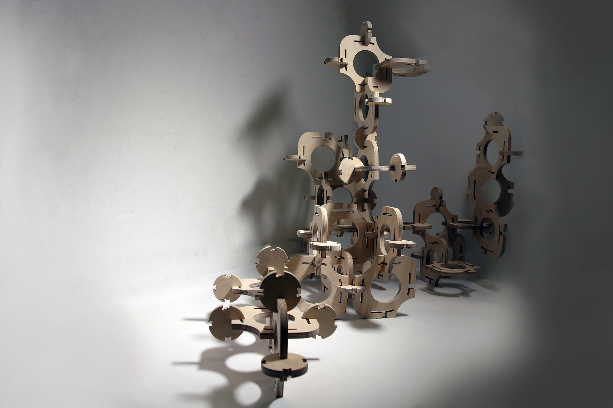

Aggregation
The proposal of a hanging garden installation prompted this computationally-driven
exploration. Working within a group of four, Jasmine Lee, Vivian Teng, Adam He and Samuel
Losi, iteration on a simple formal logic through digitally fabricated models led to an assembly
of asymmetrical modules. Contrasting squares and circles begin to speak to one another
through careful play of negative space and light. Introduction of a smaller module to deviate
from the regularity of the standard grid allowed for the differentiated aggregation of modules
and variation in all directions.
This entire project was worked on collaboratively. Though an individual would be
manipulating designs and rendering, the entire process was done in a group setting, where all
members were in attendance.
This project was designed in Spring 2019.
